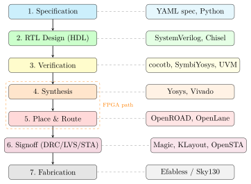

Chapter 1: Introduction¶
1.1 What Is This Tutorial About?¶
Every electronic device around you — your smartphone, laptop, the router providing your Wi-Fi, the satellite navigation system in your car — runs on custom silicon chips. These chips are designed by engineers using a process that starts with a simple idea written in a hardware description language and ends, months later, with a physical piece of silicon being manufactured in a cleanroom the size of a football field.
This tutorial walks you through the entire journey: from the first line of code describing a digital circuit, all the way to a fabrication-ready chip layout, with an FPGA prototype at the halfway point for validation. You do not need prior chip-design experience. If you have programmed a computer before and understand basic binary numbers, you have everything you need to get started.
Analogy: Architect to Builder
Think of chip design like designing a skyscraper.
-
The architect draws blueprints (RTL design).
-
The structural engineer checks that it won’t fall down (verification & formal proof).
-
The construction manager figures out where every beam goes (physical design).
-
The inspector certifies the building is safe (DRC/LVS signoff).
-
The factory pours the concrete and erects the steel (fabrication).
Each stage has its own tools, its own language, and its own specialists. This tutorial covers all of them.
1.2 The Two Worlds: FPGA and ASIC¶
Chip designers live in two worlds, and understanding the difference is the single most important concept in this tutorial.
1.2.1 FPGAs — Reconfigurable Hardware¶
A Field-Programmable Gate Array (FPGA) is a chip that can be reconfigured. It contains hundreds of thousands of tiny logic blocks (called Look-Up Tables or LUTs), flip-flops, and programmable wiring. You describe what circuit you want in software, and the FPGA is configured to behave exactly like that circuit.
Key properties of FPGAs:
-
Reprogrammable — you can change the design in seconds.
-
Immediately available — buy one online for $30–$3000, plug it in.
-
Slower and more power-hungry than a custom chip for the same task.
-
Used for: prototyping, low-volume products, signal processing.
FPGA boards used in this tutorial:
| Board | FPGA Chip | Family | LUT Count |
|---|---|---|---|
| Arty A7-35T | xc7a35ticsg324-1L | Xilinx Artix-7 | 20,800 |
| Arty A7-100T | xc7a100tcsg324-1 | Xilinx Artix-7 | 63,400 |
| KCU102 | xcku060-ffva1156 | Xilinx Kintex UltraScale | 331,680 |
| KCU106 | xcku040-ffva1156 | Xilinx Kintex UltraScale | 242,400 |
| ZCU102 | xczu9eg-ffvb1156 | Xilinx Zynq UltraScale+ | 274,080 |
| DE10-Nano | 5CSEBA6U23I7 | Intel Cyclone V SoC | 110,000 |
1.2.2 ASICs — Custom Silicon¶
An Application-Specific Integrated Circuit (ASIC) is a chip that is permanently manufactured to implement one fixed design. Once manufactured, it cannot be changed.
Key properties of ASICs:
-
10–100\(\times\) faster than an FPGA for the same circuit.
-
10–100\(\times\) lower power consumption.
-
Costs millions of dollars to manufacture at commercial foundries.
-
Open-source foundries (Sky130, GF180) now offer free or very cheap tapeout slots — this tutorial uses those.
1.3 The Complete Pipeline — A 30,000-Foot View¶
Figure 1.1 shows the full design flow covered by this tutorial and the tools used at each step.

1.4 How This Tutorial Is Organised¶
Each chapter covers one stage of the pipeline and introduces the relevant tools through worked examples. Code listings are taken directly from the files in this project, so you can run every example on your own machine.
- Chapter 2
- Digital design fundamentals — logic gates, flip-flops, finite-state machines.
- Chapter 3
- Hardware Description Languages — SystemVerilog coding style and common patterns.
- Chapter 4
- Processor cores — RISC-V architecture and the available open-source cores.
- Chapter 5
- Bus protocols — AXI4, Wishbone, APB and how they connect IP blocks.
- Chapter 6
- FPGA prototyping — Vivado/Quartus flows, constraint files, board bring-up.
- Chapter 7
- Verification — simulation, cocotb, formal verification, UVM.
- Chapter 8
- Synthesis — turning HDL into a gate netlist with Yosys and Vivado.
- Chapter 9
- Physical design — floorplan, placement, clock tree, routing with OpenROAD.
- Chapter 10
- PDKs and fabrication — Sky130, GF180, ASAP7, and the tapeout process.
- Chapter 11
- The automation pipeline — Python orchestration and Makefile builds.
1.5 Prerequisites and Environment Setup¶
1.5.1 Software You Need¶
All tools listed below are free and open-source:
| Tool | Install | Used For |
|---|---|---|
| Icarus Verilog | apt install iverilog |
RTL simulation |
| Verilator | apt install verilator |
Fast C++ simulation & lint |
| Yosys | OSS CAD Suite | Synthesis |
| OpenROAD | pip install openroad |
Place & route |
| OpenLane 2 | pip install openlane |
RTL-to-GDS flow |
| Magic VLSI | apt install magic |
DRC / LVS / layout |
| KLayout | klayout.de | GDS viewer & DRC |
| cocotb | pip install cocotb |
Python-based verification |
| SymbiYosys | pip install symbiyosys |
Formal verification |
| GTKWave | apt install gtkwave |
Waveform viewer |
| Python 3.8+ | python.org | Automation scripts |
The file docs/references/tool-installation.md in the project contains the full step-by-step installation guide for every tool listed above.
1.5.2 Quick Start — Five Minute Smoke Test¶
After installing the tools, run the following commands to verify everything works:
# Check Icarus
iverilog -V
# Lint the provided UART template
verilator --lint-only -Wall \
rtl-templates/peripherals/uart_16550.sv
# Synthesise a simple design with Yosys
bash scripts/bash/synth_yosys.sh uart_16550 \
rtl-templates/peripherals/uart_16550.sv generic
# Run the UART testbench
bash scripts/bash/sim_run.sh \
rtl-templates/peripherals/uart_16550.sv \
verification/tb-templates/uart_16550_tb.sv tb
If all four commands complete without errors, your environment is ready.